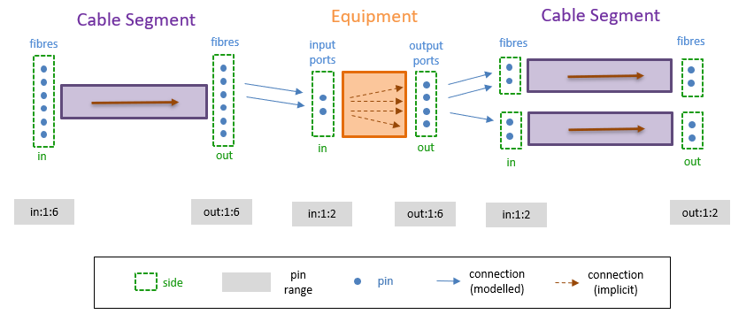

Fiber Connectivity Model
The following figure shows the fiber connectivity model.

Figure: Fiber Connectivity Model
The fiber level connectivity model involves the following concepts:
-
Pin: A connection point on the signal network (a port or a potential connection point on a fiber). Pins are not modeled explicitly i.e., there is no database record corresponding to an individual port or fiber. Instead, their existence is inferred from the attributes of the network objects on which they are located (the port or fiber count).
-
Side: A connection interface on an object (a set of pins). Equipment typically has two sides; upstream (fiber in) and downstream (fiber out). Cable segments also have in and out sides. For directed cables, these correspond to the segments upstream and downstream ends.
-
Pin range: A contiguous set of pins on the same side of an object. Pin ranges are desiginated using <side>:<low>:<high> tuples, for example out:1:5, in:10:15.
-
Modeled Connection: An explicit connection between two pin ranges, example between ports out:1:5 on a patch panel and fibers in:10:15 on a cables segment. Corresponds to a connection record in the database.
-
Implicit Connection: An internal connection within a piece of equipment. Equipment connections are inferred from the function configured for the equipment type.
For more details, see objects equipment, mwycom_fiber_segment and mywcom_fiber_connection in Data Model (System Objects).